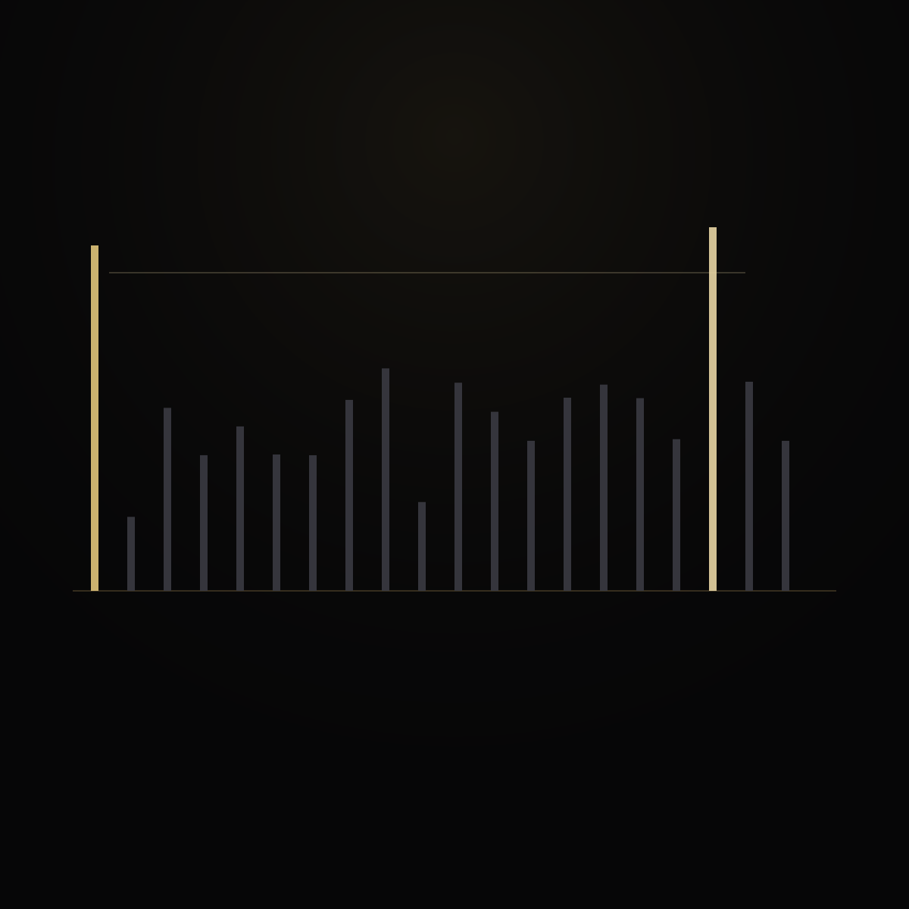
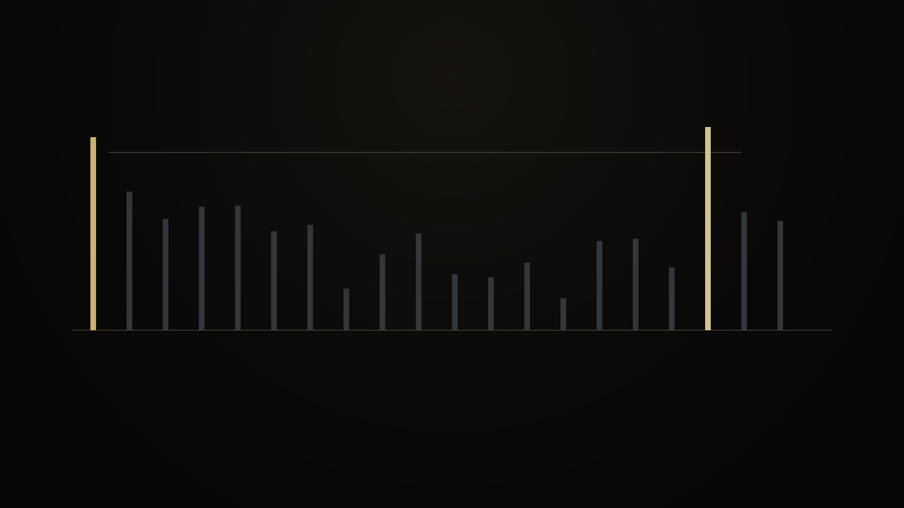
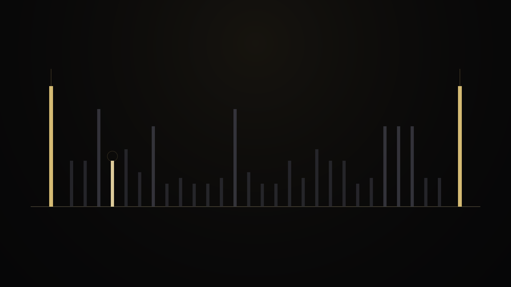
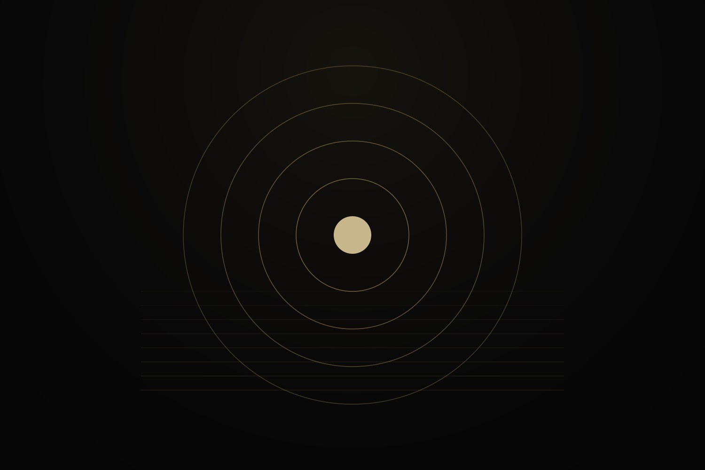
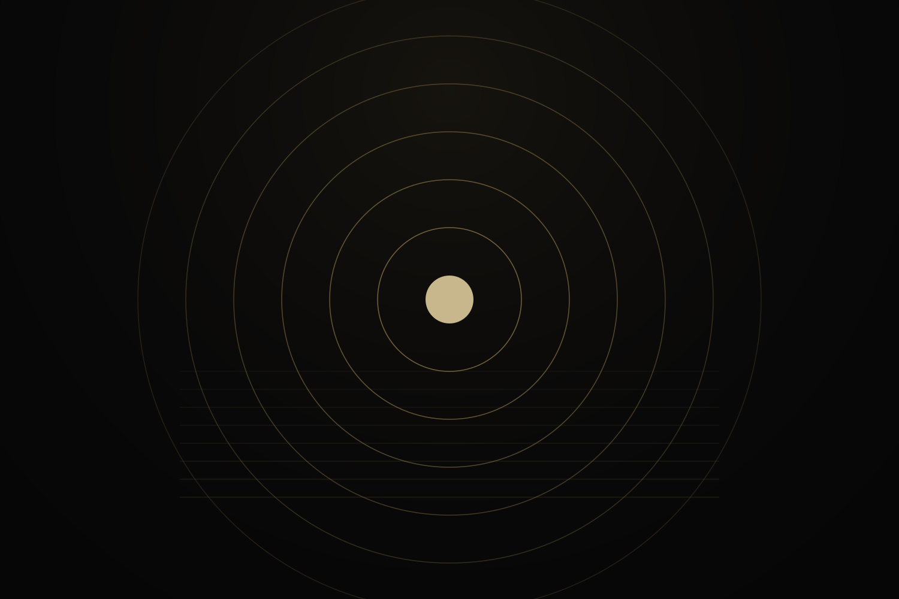

03 · Laws
What is proved
Three universal pillars stand in the formal proof reference. This page states them in public language. None is a heuristic, a benchmark slogan, or a probability claim.

Proved · universal
Pillar I · Next prime from divisor counts
Start with a known prime. Walk integers above it in order. Stop at the first integer with exactly two positive divisors. That integer is the next prime.

Pillar II · The interior maximizer
Inside a nonempty gap, the leftmost minimum-divisor interior integer uniquely maximizes the comparison score.

Pillar III · Universal bounded compression
The selected witness offset from the left prime is bounded by a dynamic cutoff at logarithmic-square scale.
This bounds the selected-witness offset w − p. It does not by itself prove RH, PNT, or every classical formulation of Cramér’s conjecture for raw gap size q − p.



